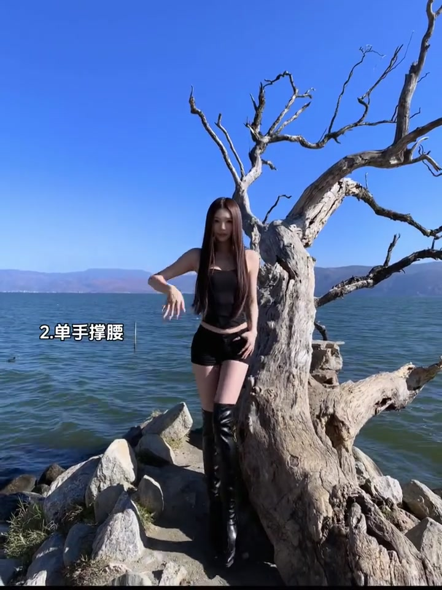
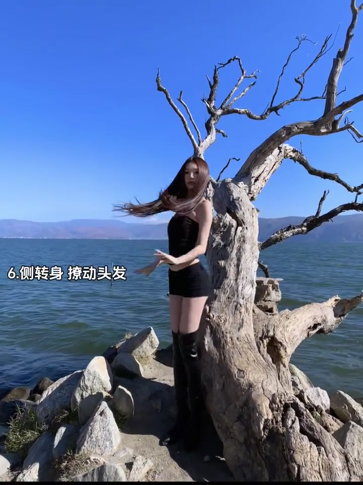
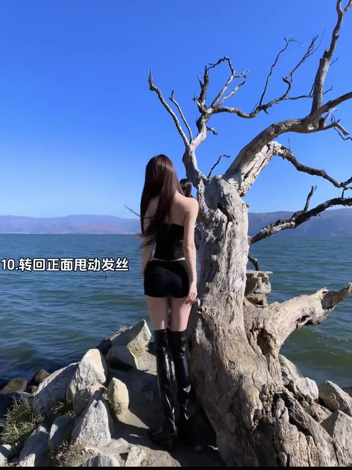
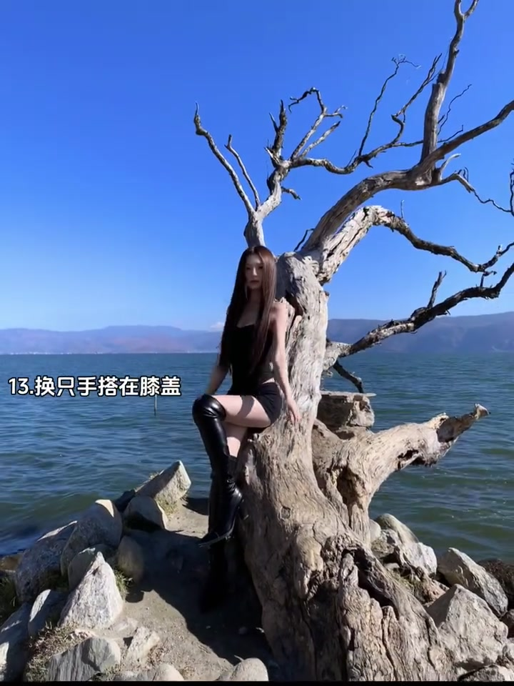

内容要点
本视频无口播内容，全程为快速全身拍照姿势演示。
知识结构
[00:00→00:03]
正面站姿+腿部错位
正面朝向镜头，双腿一前一后或一腿微弯，制造腿部线条变化。这个姿势最快上手，不需要转头也不需要大幅度动作。
[00:03→00:06]
侧身+重心偏移
身体侧向镜头，重心放在一条腿上，另一腿自然延伸。侧身展示身体侧面线条，同时显得更瘦更高。
[00:06→00:09]
半转身+手部自然放
身体微微转身，一只手自然垂放或搭在腰上。这个姿势既不是完全正面也不是完全侧面，有"被叫住回头"的自然感。
[00:09→00:12]
走路中的抓拍
向前或向侧面走几步，在走路过程中抓拍。这是最不需要"摆"的姿势——走就对了。
核心结论
排队拍照的核心原则：腿不能并拢、身体不能正对镜头、能走就不要站。三秒内完成姿势切换，不给后面排队的人压力。
图文实录
姿势一：正面站姿+腿部变化
00:00 – 00:03
正面面对镜头，但腿绝不平行并拢。一脚在前一脚在后，或者一只膝盖微弯。这个微小的腿部变化是全身照的底线——并腿站立会显得身体像一根柱子。

[00:02] 正面站姿：腿一前一后，打破并腿站立
Front stance: one leg forward, one back, breaking the feet-together stand
姿势二：侧身+重心偏移
00:03 – 00:06
身体转成侧面，重心放在靠近镜头的那条腿上，另一条腿放松状态。侧身在视觉上减少身体正面面积，拍出来更显瘦。

[00:05] 侧身站姿：重心放一条腿，身体侧面线条感
Side stance: weight on one leg, emphasizing side-body lines
姿势三：半转身+手部自然
00:06 – 00:09
身体从正面或侧面微微转动 30-45 度，手自然搭在腰部或自然下垂。这种"半转身"是所有站姿中最不容易僵硬的——既不是军人立正也不是刻意拗造型，像被朋友叫住转头的那一瞬间。

[00:08] 半转身：身体微微扭转+手自然放置
Half turn: body slightly twisted + hands placed naturally
姿势四：走路抓拍
00:09 – 00:12
最后一个姿势不摆了——直接走。向前迈步时的手脚摆动是最自然的状态，连拍几张选一张步态最舒展的。这也是排队场景的隐藏技巧：你往前走，同伴在你经过时按快门，两秒搞定一个机位。

[00:11] 走路抓拍：不需要摆姿势，走就对了
Candid walking: no posing needed — just walk